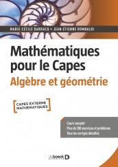

| Jean-Etienne Rombaldi | Dany-Jack Mercier et Jean-Etienne Rombaldi | ||
|---|---|---|---|
|
Mathématiques pour l'agrégation externe. Analyse. DeBoeck Supérieur.
https://www.deboecksuperieur.com/... Feuilleter |
|||

|
Mathématiques pour l'agrégation. Analyse et probabilités. DeBoeck Supérieur.
https://www.deboecksuperieur.com/... Feuilleter |
Agrégation interne de mathématiques 2016. Publibook. | |

|
Mathématiques pour l'agrégation, deuxième édition. Algèbre et géométrie. DeBoeck Supérieur.
https://www.deboecksuperieur.com/... Feuilleter |
Agrégation interne de mathématiques de 2005 à 2013. Publibook. | |

|
Mathématiques pour le Capes. Probabilités. DeBoeck Supérieur.
https://www.deboecksuperieur.com/... Feuilleter |
Capes Externe et CAPLP de Mathématiques, 2013. Publibook. | |
|
Mathématiques pour le Capes. Analyse. DeBoeck Supérieur.
https://www.deboecksuperieur.com/... Feuilleter |
Capes Externe, Interne et Agrégation Interne de Mathématiques, 2011. Publibook. | ||
|  |
Mathématiques pour le Capes. Algèbre. DeBoeck Supérieur.
https://www.deboecksuperieur.com/... Feuilleter |

|
CAPES externe de Mathématiques 2009 à 2011. Publibook. |

|
Analyse matricielle, deuxième édition. E.d.p. Sciences.
https://laboutique.edpsciences.fr/... |

|
Capes Externe, Interne et Agrégation Interne de Mathématiques, 2010. Publibook. |
|
Thèmes pour l'agrégation de mathématiques, deuxième édition. E.d.p. Sciences.
https://laboutique.edpsciences.fr/... |
Annales Agrégation Interne, 2008-2010. Publibook. | ||
|
Leçons d'oral pour l'Agrégation Interne. Première épreuve : les exposés. DeBoeck Supérieur.
https://www.deboecksuperieur.com/... Feuilleter |

|
Capes Externe, Interne et Agrégation Interne de Mathématiques, 2009. Publibook. | |

|
Leçons d'oral pour l'Agrégation Interne. Seconde épreuve : les exercices. DeBoeck Supérieur.
https://www.deboecksuperieur.com/... Feuilleter |
Capes Externe de Mathématiques 2006 à 2008 et Agrégation Interne 2008. Publibook. | |

|
Eléments d’analyse réelle, deuxième édition. E.d.p. Sciences.
https://laboutique.edpsciences.fr/... |
Agrégation Interne, 2005-2007. Publibook. | |

|
Exercices et problèmes pour l'agrégation de mathématiques. DeBoeck Supérieur.
https://www.deboecksuperieur.com/... Feuilleter |

|
Capes et agrégation interne de Mathématiques, 2006. Publibook. |
| Interpolation et approximation. Vuibert. |

|
Capes externe de Mathématiques, 1999 à 2005. Publibook.
Dany-Jack et moi même offrons le livre. Cliquer sur l'image. |
|
|
Problèmes corrigés d’analyse numérique. Masson.
Le livre étant épuisé depuis longtemps, j'offre le livre. Cliquer sur l'image. |
Capes externe, interne et agrégation interne de Mathématiques, 2005. Publibook. | ||

|
Algorithmique numérique et Ada. Masson.
Le livre étant épuisé depuis longtemps, j'offre le livre. Cliquer sur l'image. Les programmes Ada correspondants sont sur ce fichier compacté |
||